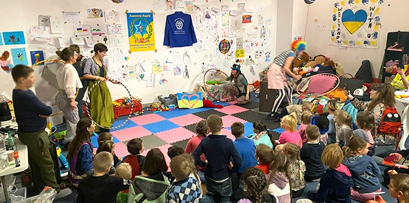
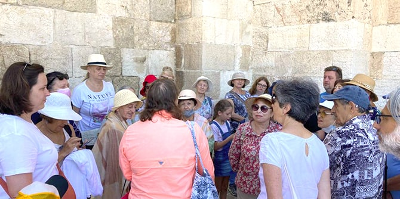
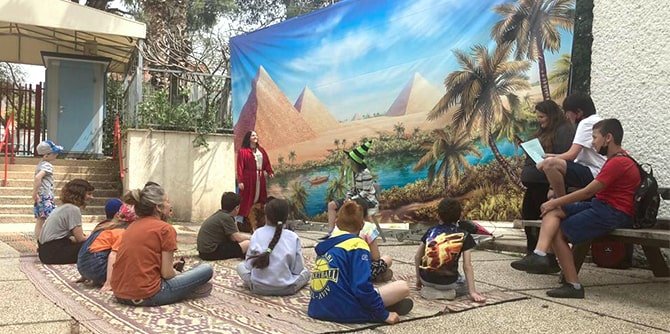
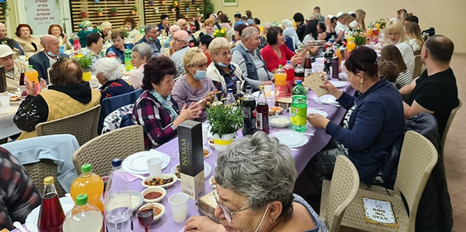
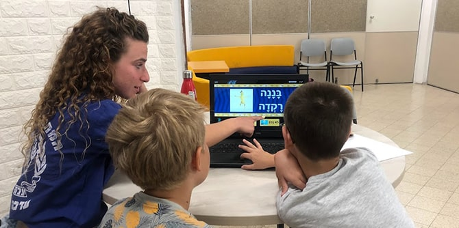

An event for Ukrainian children run by the Nachshonim Youth Homes. The organization is using their Mandel grant to absorb Ukrainian refugees and immigrants into existing absorption centers. (Photo: Oren Dado Barkan)
In the face of the current tragedy of the Ukrainian people, the Mandel Foundation undertook to support activities of Mandel graduates who are working in the fields of education, society, welfare and culture for the benefit of Ukrainian refugees and immigrants to Israel. In recognition of the many difficulties experienced by Ethiopian immigrants to Israel as well, the Foundation also decided to offer assistance to projects and initiatives headed by Mandel graduates working to improve the integration of Ethiopians into Israeli society.
To this end, in March of this year, the Foundation invited Mandel graduates to submit applications for grants that will be used to enhance the well-being of refugees and immigrants from Ukraine and Ethiopia. Thirty-nine organizations were awarded grants of either NIS 50,000 or NIS 100,000, with a total of one million dollars awarded overall.

A tour of the Old City conducted by Beit Midrash Elul for 33 Ukrainian refugees. The learning and cultural center is using its grant from Mandel to offer social, cultural, and group study activities for refugees. (Photo: Yana Nikulchev)
The chosen graduates and their respective organizations are using the funds to undertake an array of activities in a number of areas:
-
In the field of education, grants were awarded to programs that enable the integration of immigrants into the formal educational system in Israel, as well as to programs and organizations that provide informal educational activities that keep immigrant children and youth engaged and facilitate their absorption into Israeli society.
-
In the policy realm, several graduates are working to improve the situation of refugees and immigrants in Israel by initiating and advancing policies that seek to promote the long-term integration of immigrants into Israeli society.
-
In the cultural arena, one grantee's organization is running theater workshops that boost the self-confidence of Ethiopian youth and assist in their integration into Israeli society. Another program is promoting artistic collaborations between Eastern European and Israeli artists of all types (filmmakers, musicians, writers, etc.)

An activity for Ukrainian refugee youth organized by the Dror Educational Centers, which is using its Mandel grant to absorb 20 teens into its educational centers via immigrant accelerators. (Photo: Gai Shouval)
Additional grants were awarded to programs aimed at improving mental health and resilience, providing financial and legal consulting, and helping refugees and immigrants to find suitable employment.
While these are just a few examples of projects being supported by the Foundation, they illustrate various ways in which Mandel graduates are addressing important current challenges.

Ukrainian refugees enjoy a hot meal organized by Meir Panim Supplementary Relief Centers, thanks to a grant from the Mandel Foundation. (Photo: Irena Sizikov)
This is the second time that the Mandel Foundation has risen to a challenge in real time and awarded grants to Mandel graduates to assist with a current crisis. In the summer of 2020, the Foundation awarded 94 grants totaling one million dollars to Mandel graduates who were leading initiatives designed to respond to emerging needs during the COVID-19 crisis. The projects supported by the grants had a significant impact on many Israelis during the pandemic.
A full list of graduates and their organizations which received grants to benefit Ukrainian refugees and immigrants as well as Ethiopian immigrants to Israel can be found
here.
 Ukrainian refugee children learn Hebrew at an education and treatment center established by the Hevel Eilot Regional Council for families slated to be absorbed in the region (Photo: Michal Keidar)
{kind=link}
{kind=link}
{kind=link}
{kind=link}
{kind=link}